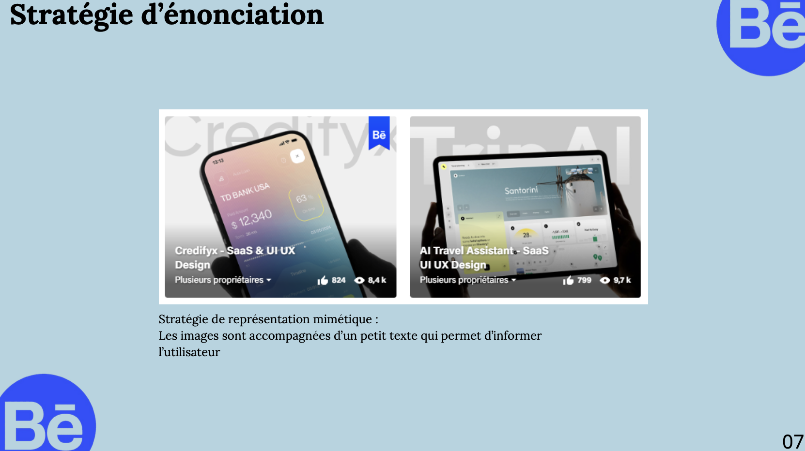

Livrables
Livrable 1 :
Dans un premier temps, j’ai constitué un dossier d’analyse du contexte économique et juridique dans lequel s’inscrit la plateforme Behance. Pour cela, j’ai mobilisé la ressource R1.16 - Économie, gestion et droit du numérique, afin de mieux comprendre l’histoire de la plateforme, son positionnement stratégique, ses acteurs concurrents ainsi que son cadre légal. J’ai également fait appel à R1.04 - Culture numérique, pour analyser les caractéristiques techniques et l’écosystème technologique de Behance, incluant sa proposition de valeur et son modèle économique. Cette phase m’a permis de couvrir l’apprentissage critique AC11.01, en présentant de manière structurée une organisation et son environnement global, ainsi que AC11.03, en produisant une lecture chiffrée et analytique de son contexte économique.
Livrable 2 :
Dans une seconde étape, j’ai réalisé un audit approfondi de la stratégie de communication de la page Behance analysée. Cette analyse m’a permis de déterminer le type de site, sa stratégie d’énonciation, ainsi que les modes d’organisation de l’interface. À travers un zoning et un wireframe, j’ai également étudié l’architecture de l’information, en identifiant les principales zones fonctionnelles du site. Pour évaluer l’ergonomie de la page, je me suis appuyé sur les critères heuristiques abordés dans la ressource R1.03 - Ergonomie et Accessibilité. Ces outils m’ont permis d’identifier les points forts et les axes d’amélioration de l’interface, tant sur le plan fonctionnel que visuel. Ces éléments contribuent à valider les apprentissages critiques AC11.02 et AC11.04, en évaluant un dispositif interactif existant et en analysant ses formes médiatiques à travers une lecture sémiotique.

Livrable 3 :
Enfin, j’ai mobilisé l’outil Figma pour formaliser une proposition de reconception de l’interface. Cette phase de conception comprend tout d’abord un user flow, représentant graphiquement les parcours possibles d’un utilisateur sur le site.
J’ai ensuite conçu un zoning et un wireframe de la version desktop du site, définissant les structures des pages, les zones fonctionnelles (navigation, contenu, identité…) et l’organisation des éléments clés.
À cela s’ajoute un UI kit, inspiré de la méthode de l’Atomic Design, intégrant :
les atomes : couleurs, typographies, icônes, illustrations, effets visuels,
les composants : boutons, menus, barres de recherche, vignettes, messages d’erreur…
Enfin, j’ai réalisé un prototype fonctionnel en version desktop, permettant une mise en situation réaliste de l’interface repensée.
Ce travail m’a permis de mettre en œuvre les apprentissages critiques AC11.05 et AC11.02, en identifiant les cibles et en proposant une solution de communication interactive adaptée à leurs besoins.